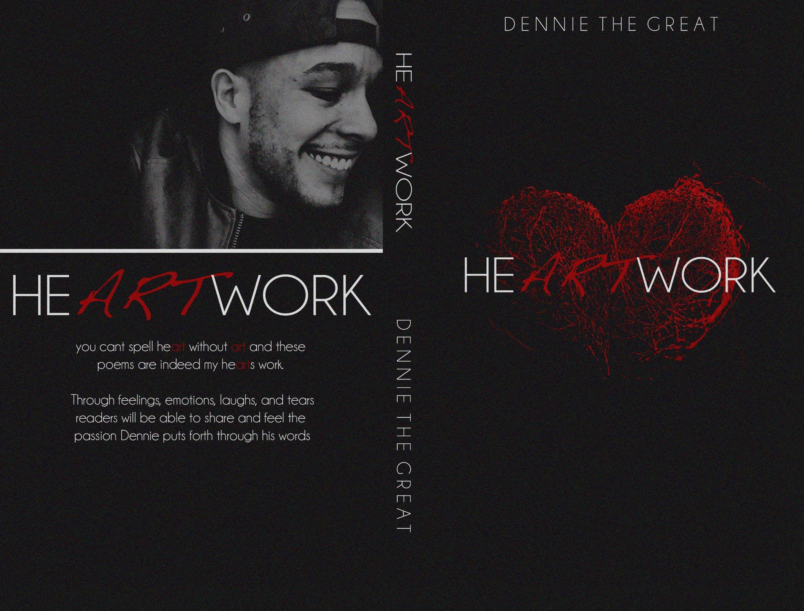

Dennis is a born creative at heart. His creative journey started with attending The Art Institute of Philadelphia as an
audio engineer and pivoting into creating music, writing music and publishing a book of spokenword entitled HeARTwork.
How I like to start my day
I don't have a personal prefence with communication. If you have a direct way to reach me, use which ever works best for you.
Phone calls, text, e-mail, morse code ect. Anytime of day, if im awake or not busy I'll respond asap, scouts honor.
The Positive Way 📈 I'm a visual learner. The best way for me to retain information is by seeing a visual demonstration or example and then repetition of practice.
The Negative Way 📉 Reading with out any direction of what i'm doing makes it difficult to retain information.
I prefer to receive direct feedback in a 1-on-1 setting. Don't hold any punches. Brute honesty motivates me. I may not like you in the moment but I'll appreciate it later.
On the otherhand, I tend to be soft when giving feedback. I can be very politically correct and try to protect feelings while still getting the point across.
My main goal for this year is to add tech to my creative ablities in any aspect. To start my food content creator journey and to write another book.
